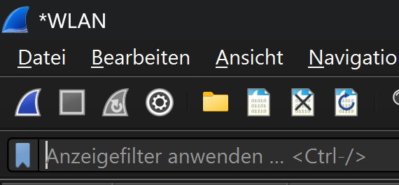
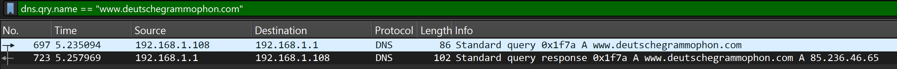
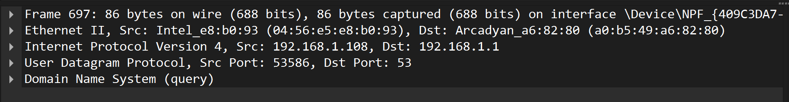
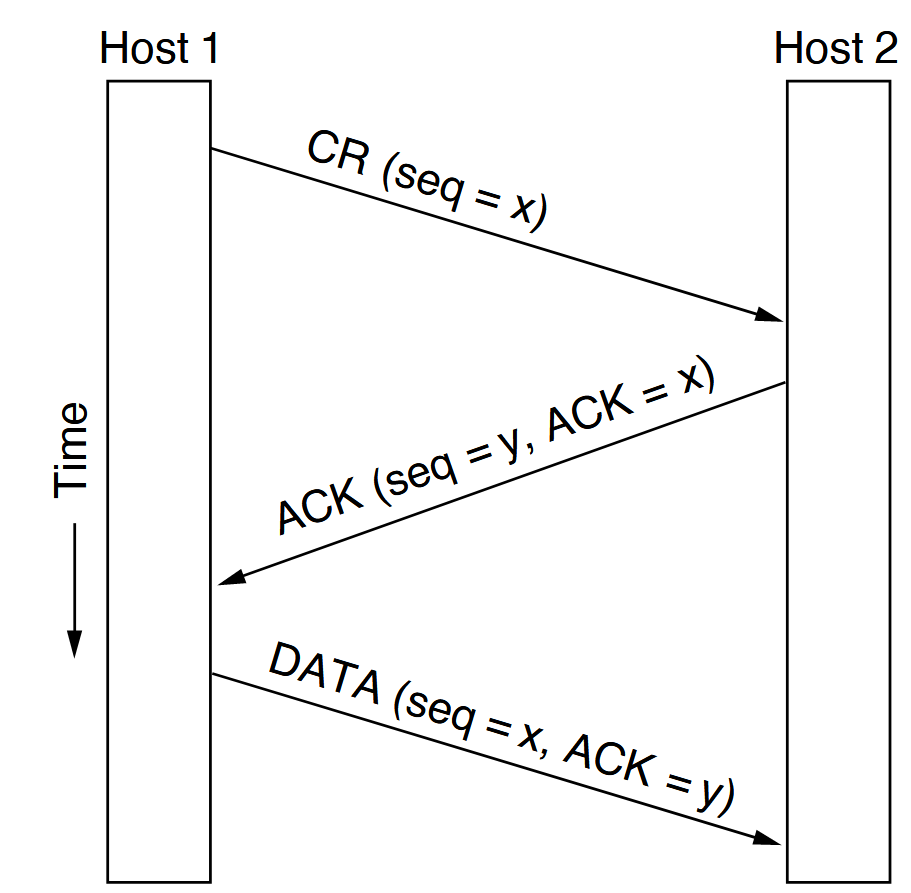

13 Beobachten von Internetverbindungen
Die folgenden Ausführungen basieren auf der Analyse von Netzwerkpaketen, welche mit Wireshark aufgezeichnet wurden. Dafür ist die Installation von Wireshark erforderlich. Die Website von Wireshark stellt dazu den entsprechenden Download zur Verfügung.
13.1 Aufzeichnen von Netzwerkpaketen
Um Netzwerkpakete aufzuzeichnen, wird Wireshark gestartet. Das Startfenster von Wireshark stellt sich folgendermassen dar:

Unter dem Titel “Aufzeichnen” kann der gewünschte Netzwerkadapter ausgewählt und die Aufzeichnung gestartet werden. Die erfassten Pakete werden in Echtzeit angezeigt und können später analysiert werden. In der Schule wird die Verbindung zum Internet per WLAN hergestellt. Entsprechend ist der WLAN-Adapter auszuwählen. Sobald der entsprechende Adapter ausgewählt ist, kann die Aufzeichnung gestartet werden. Gestartet wird die Aufzeichnung durch einen Klick auf das blaue Haifischflossen-Symbol in der Symbolleiste. Die Aufzeichnung startet umgehend. Angehalten wird die Aufzeichnung mit einem Klick auf das rote Quadrat-Symbol in der Symbolleiste. Die Aufzeichnung kann entweder über das Menü Datei > Speichern, durch einen Klick auf das Dateisymbol oder durch die Tastenkombination Strg + S gespeichert werden.
13.2 Beobachten der DNS-Anfragen
13.2.1 Filtern der Aufzeichnung
Um die DNS-Anfragen zu beobachten, wird bei laufender Wireshark Aufzeichnung eine beliebige Website aufgerufen. Dadurch werden die entsprechenden DNS-Anfragen erfasst und können in Wireshark analysiert werden. Nach dem Aufruf der Website kann die Aufzeichnung angehalten und die erfassten Pakete analysiert werden (wenn die Aufzeichnung weiterläuft, bewegen sich die Pakete im Anzeigefenster ständig weiter).
Damit die relevanten Datenpakete angezeigt werden, kann der aufgezeichnete Datenverkehr gefiltert werden. Der Filter wird in der Eingabefeld für “Anzeigefilter” eingegeben.

Der entsprechende Filter für DNS-Anfragen zu einer gegebenen Website lautet
Der angewendete Filterbefehl ist relativ einfach nachzuvollziehen. An erster Stelle steht hier das Protokoll, nach dem gefiltert wird. Weil nach den DNS-Anfragen gefiltert wird, ist das hier dns. dns alleine wäre bereits ein gültiger Filter. Allerdings werden dann alle DNS-Pakete angezeigt. Der Filter wird daher zu dns.qry.name ergänzt Dabei steht qry als Abkürzung für query - Anfrage. Die Ergänzung name steht für den Domain Name, der Abgefragt wird. == ist die logische Verknüpfung, nach der gefiltert wird und bedeutet hier “ist gleich”. Zwischen den Anführungszeichen steht der String, nach dem gesucht wird.
Sofern die Seite während der Aufzeichnung genau einmal aufgerufen wurde, wird der Filter zwei Pakete anzeigen: eine DNS-Anfrage und eine DNS-Antwort.

Das Bild zeigt als erstes Paket die DNS-Anfrage für www.deutschegrammaphon.com und als zweites Paket die entsprechende Antwort.
13.2.2 Analyse der gefilterten Pakete
Für eine genaue Analyse der Kommunikation kann ein einzelnes Paket durch anklicken ausgewählt werden. Dadurch wird das Paket im unteren Bereich von Wireshark detailliert angezeigt und kann genauer untersucht werden.

Dass es sich hier im Bild um die Details des ausgewählten Paketes handelt, ist an der übereinstimmenden Paketnummer zu erkennen. Die Zeilen in der Detailansicht entsprechen den einzelnen Protokoll-Header-Feldern des ausgewählten Paketes. Das bildet auch das TCP/IP Schichtenmodell ab.
Die Detailansicht kann durch einen Klick auf die Dreiecke am Anfang der einzelnen Protokoll-Header-Felder erweitert werden. Dadurch werden weitere Informationen zu den jeweiligen Feldern angezeigt. Hier werden jedoch nur die Zusammenfassungen der Header-Felder erläutert.
Im Beispiel wird als erstes der Inhalt des Headers des Internetlayers erläutert.
In der Zusammenfassung werden die Quell- und Ziel-Adressen des IP-Pakets angezeigt. Im vorliegenden Fall sind das jeweils die Privaten IP-Adressen 192.168.1.108 und 192.168.1.1. 192.168.1.108 ist die Quell-Adresse, erkennbar an der Abkürzung “Src” und 192.168.1.1 die Ziel-Adresse, erkennbar an der Abkürzung “Dst”. Beide Geräte befinden sich damit im gleichen LAN. Der Rechner mit der IP-Adresse 192.168.1.1 ist der Router. Dieses Gerät stellt die Internetverbindung her und kann DNS-Anfragen aus seinem Cache beantworten.
Im Header für das User Datagram Protocol (UDP) werden die Quell- und Ziel-Ports angezeigt.
Der Quellport wurde mit 53586 automatisch und weit oberhalb der sog. “Well-Known Ports” (0-1023) gewählt. Die “Well-Known Ports” sind Ports, die von bestimmten Anwendungen oder Diensten standardmässig verwendet werden. Entsprechend wurde der Zielport auf 53 gewählt, da dies der standardmässige Port für DNS-Anfragen ist. Eine Liste der “Well-Known Ports” findet sich in der offiziellen IANA-Portdatenbank. Der Quellport ermöglicht es dem Zielsystem, die Antwort an den korrekten Absender zurückzusenden. NAT-Geräte (vgl. Abschnitt Network Address Translation (NAT)) nutzen diese Port-Informationen zusätzlich für die Zuordnung zwischen privaten und öffentlichen Adressen.
Der zuunterst dargestellte Layer in der Detailansicht, beinhaltet die eigentliche Anfrage für die Übersetzung des Domainnamens in eine IP-Adresse.
Aus diesem Grund wird dieser Teil der Analyse hier auch aufgefaltet dargestellt.
Unter dem Stichwort Queries wird die gesuchte Adresse www.deutschegrammophon.com angezeigt. Das Stichwort type A zeigt an, dass es sich hier um eine Anfrage nach einer IPv4-Adresse handelt. IPv4-Adressen werden mit A bezeichnet, IPv6 mit AAAA. Das letzte Element in dieser Zeile ist die Klasse der Anfrage, in diesem Fall IN für das Internet. Obwohl heute fast ausschliesslich das Internet als Netzwerktyp verwendet wird, ist das Feld für die Klasse (IN) aus historischen Gründen weiterhin Teil jeder DNS-Anfrage.
Der entsprechende Inhalt der Antwort sieht folgendermassen aus:
Das Paket wiederholt die Frage und liefert die Antwort des DNS-Servers. Der Domainname www.deutschegrammophon.com ist mit der IPv4-Adresse 85.236.46.65 verknüpft.
Damit kann die Verbindung zur Website www.deutschegrammophon.com hergestellt werden.
13.3 Beobachtung des Verbindungsaufbaus
Der Verbindungsaufbau zwischen Client (lokaler Rechner) und Server (Rechner im Internet) erfolgt in mehreren Schritten, die im sogenannten “Three-Way Handshake” zusammengefasst werden. Dieser Prozess stellt sicher, dass beide Seiten bereit sind, Daten zu senden und zu empfangen. Die folgende Abbildung zeigt eine schematische Darstellung des “Three-Way Handshake”.

Der Client sendet ein SYN-Paket an den Server, um eine Verbindung anzufordern. Dieser atwortet mit einem SYN-ACK-Paket. Das heisst, er bestätigt die Anfrage mit einem ACK und fragt seinerseits mit einem SYN nach, ob der Client (immer noch) bereit ist, die Verbindung aufzubauen. Damit klar ist, dass sich das ACK im SYN-ACK-Paket auf das ursprüngliche SYN-Paket bezieht, werden die einzelnen Pakete mit einer Sequenznummer (Sequence Number) versehen. Das ACK gibt die Sequenznummer des SYN-Paketes plus eins zurück.
Dieser Vorgang kann mit Wireshark beobachtet werden. Dafür braucht es einen kombinierten Wireshark Anzeigefilter. Als Beispiel wird der Verbindungsaufbau zwischen dem lokalen Rechner und der Website von www.deutschegrammophon.com betrachtet. Der erste Teil des Filters soll nur jene Pakete anzeigen, welche mit der IP-Adresse des Servers von www.deutschegrammophon.com (85.236.46.65) kommunizieren. Dieser Filter lautet
Dieser Filter alleine zeigt jedoch noch zu viele Pakete an.

Um die Resultate weiter einzuschränken sollen nur jene Pakete angezeigt werden, welche entweder das SYN-Flag oder das ACK-Flag (oder beides) gesetzt haben. Dies kann mit folgendem Filter erreicht werden:
Das sind allerdings immer noch zu viele Pakete. Daher sollen nur jene Pakete angezeigt werden, welche die Antworten auf eine SYN-Anfrage sind. Das kann erreicht werden, in dem ein Paket mit dem SYN-Flag mit der rechten Maustaste angeklickt wird und die Option “Follow” > “TCP Stream” ausgewählt wird. Dadurch wird der gesamte TCP-Stream, in dem dieses Paket steht, (die aufeinanderfolgenden Pakete) angezeigt. Der Filter wird automatisch angepasst.
Das folgende Listing zeigt den ganzen Filterbefehl für die Anzeige der Pakete, die zu diesem TCP-Stream gehören:

Dass die Pakte die Kommunikationsfolge des Three-Way Handshakes zeigen, ist an den gesetzten Flags zu erkennen. Im ersten Schritt sendet der Client ein SYN-Paket, worauf der Server mit einem SYN-ACK-Paket antwortet. Der Client bestätigt dies mit einem ACK-Paket. Diese drei Schritte sind im Wireshark-Filter sichtbar. Gut zu erkennen sind die jeweiligen Portnummern, die in den TCP-Paketen verwendet werden.
Anschliessend an diesen “Three-Way Handshake” kann der Client mit dem Server kommunizieren.